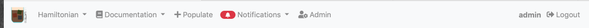
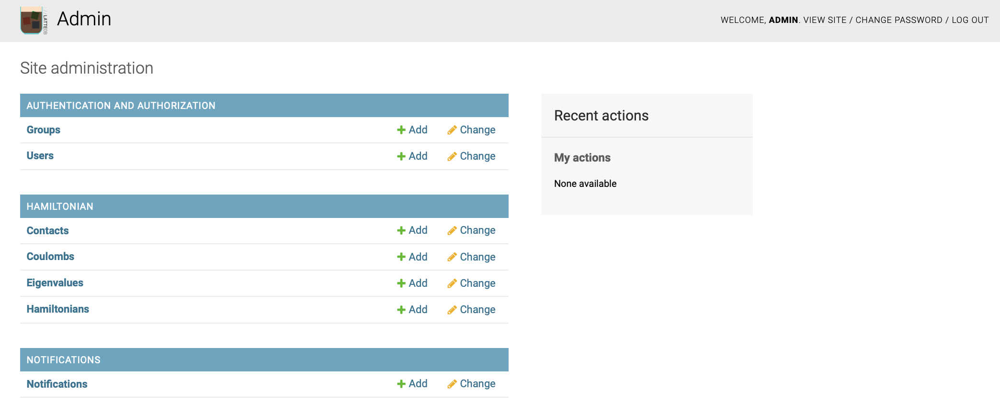
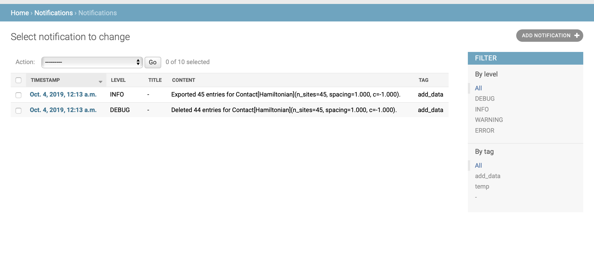

The private views¶
By default, views you create are public – any user who has access to the address where the web page is launched, is able to see the content. It is also possible to require the user to be logged in (and have specified permissions) to see views.
Since you have just created the database, there is no user specified. You can create a new user by running
python manage.py createsuperuser
This information is stored (encrypted) in the database my_project.sqlite.
Once you have logged in, you will be able to access two more pages:

The notifications page: http://127.0.0.1:8000/notifications/
And the admin pages: http://127.0.0.1:8000/admin/
Both pages are present by default once you create your project with EspressoDB.
The notifications page¶

The notifications page works similarly to Python’s logging module.
You can create a notifier instance and directly log messages to the database
from espressodb.notifications import get_notifier
NOTIFIER = get_notifier()
NOTIFIER.info("Hello world!")
which can be viewed on the notifications page. Different to logging you can also specify groups which are allowed to see this message – a user not present in this group will not be able to see them.
For more informations, see the the notification doc.
The admin pages¶

As the name suggests, the admin pages have full management control over all other pages (unless you restrict your database access).
You can search, add, change and delete existing entries from this page.
By default, all models specified in your PROJECT_APPS will be listed here.
